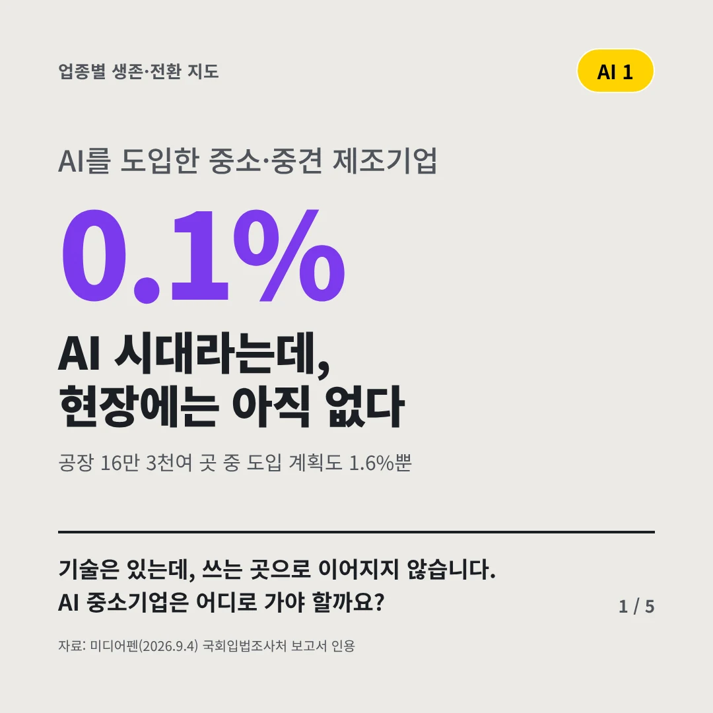
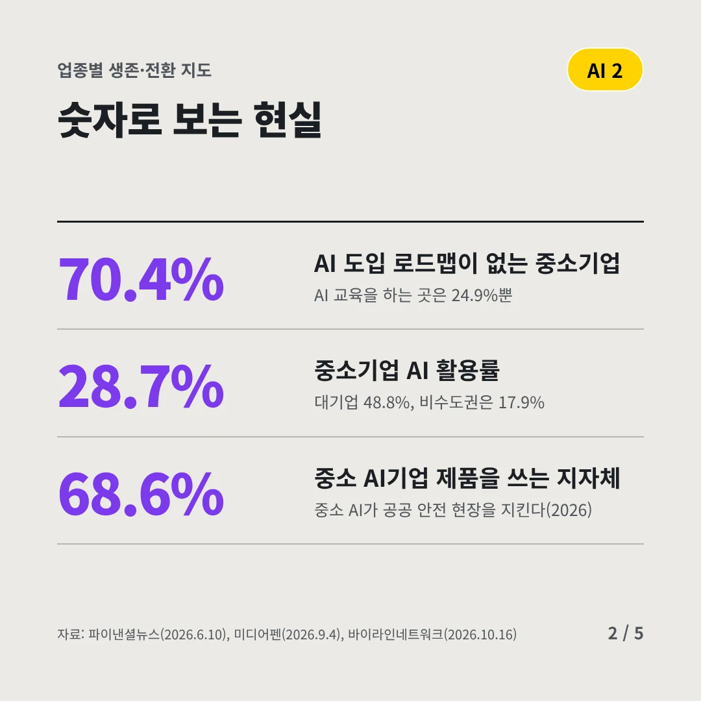
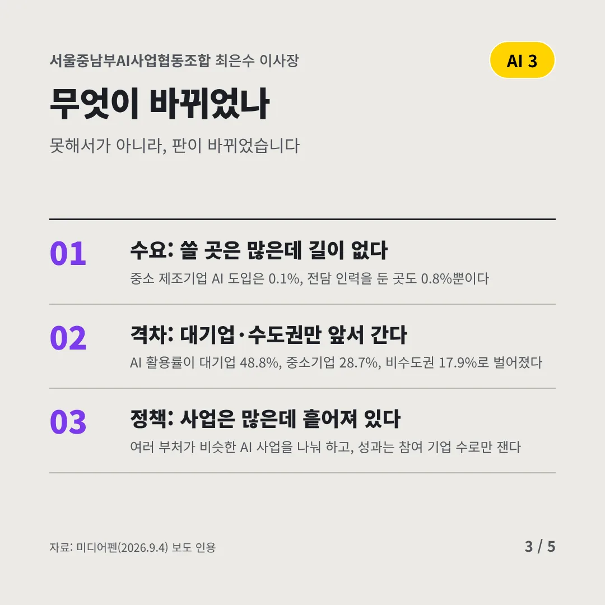
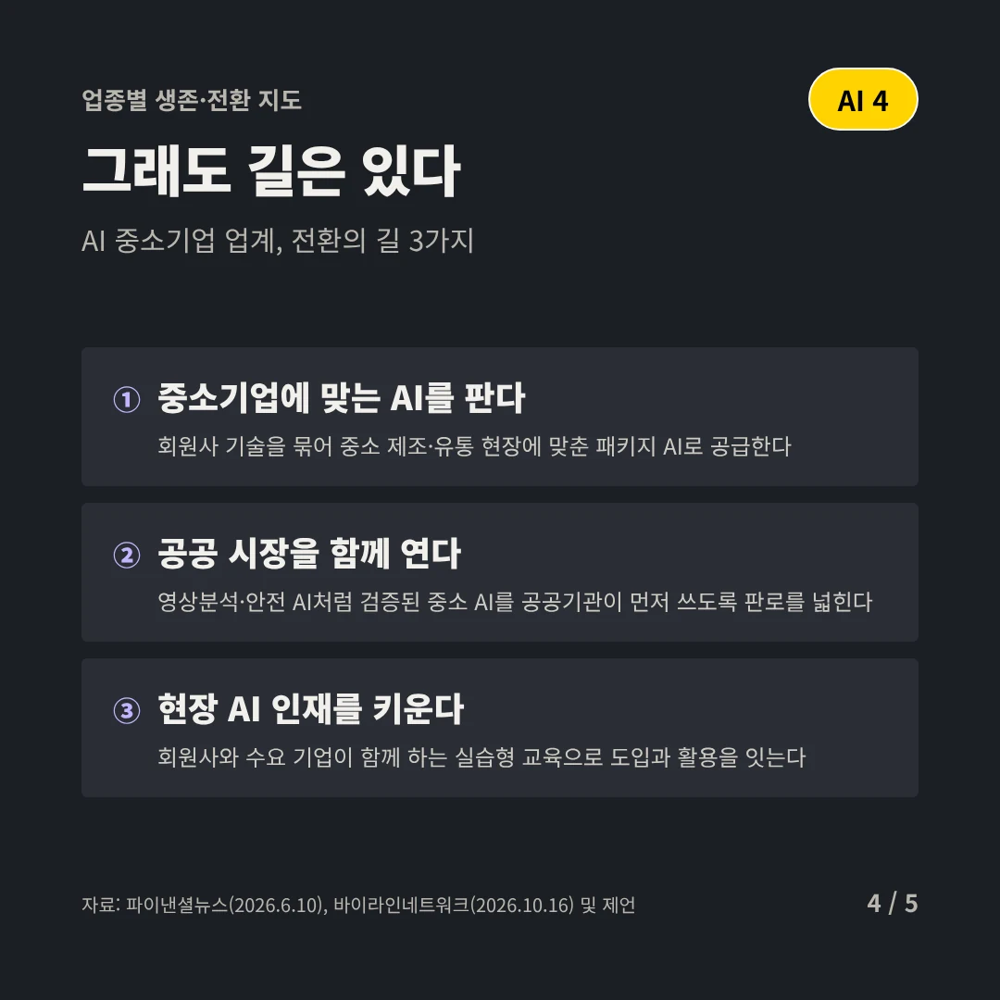
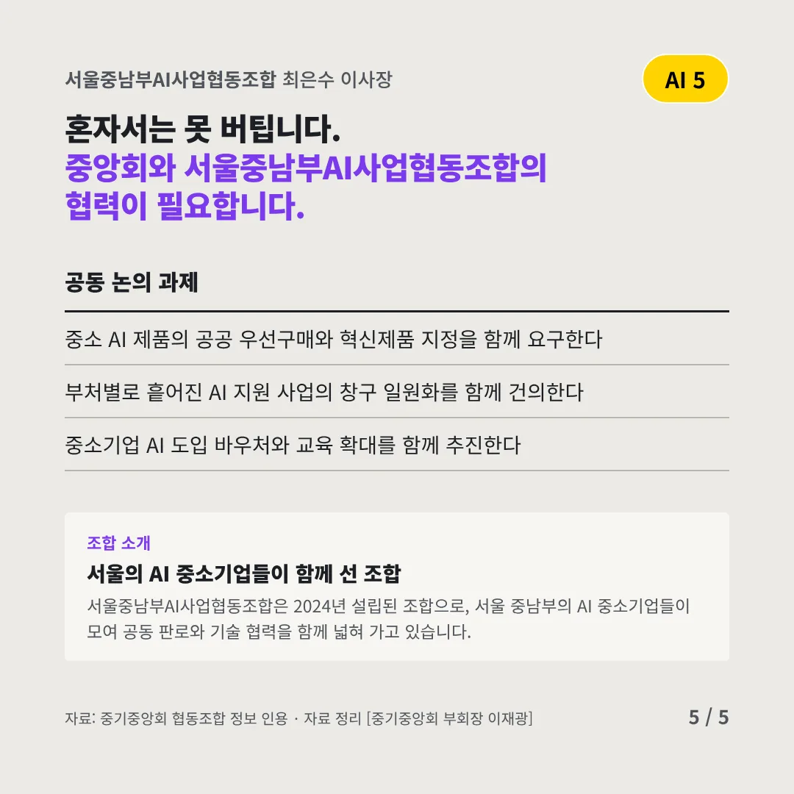
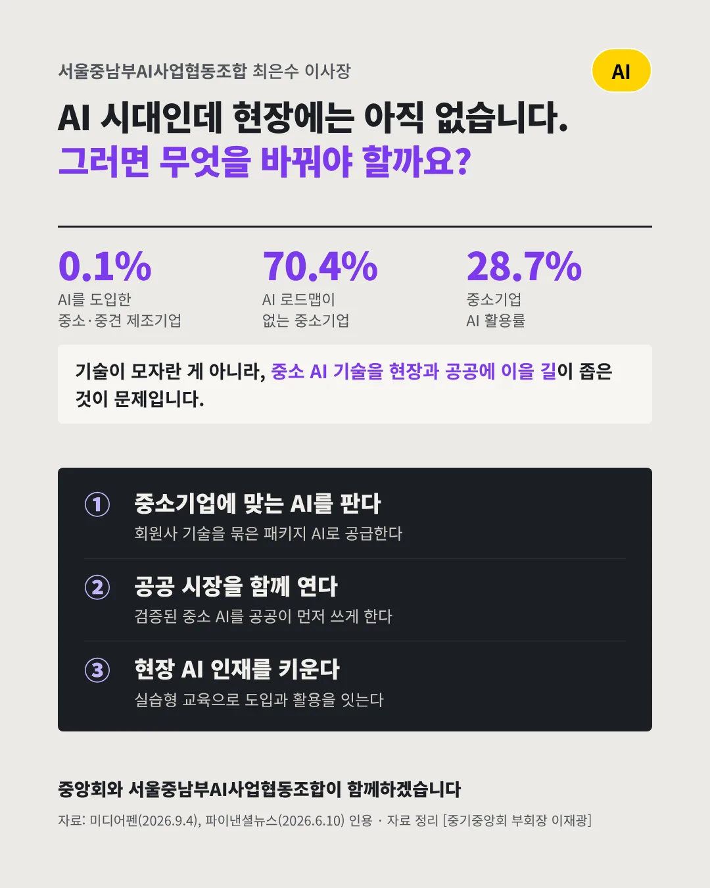

서울중남부AI사업협동조합
AI 시대라는데, 현장에는 아직 없다
0.1% AI를 도입한 중소·중견 제조기업






기술은 있는데, 쓰는 곳으로 이어지지 않습니다. AI 중소기업은 어디로 가야 할까요?
숫자로 보는 현실
- 70.4%AI 도입 로드맵이 없는 중소기업AI 교육을 하는 곳은 24.9%뿐
- 28.7%중소기업 AI 활용률대기업 48.8%, 비수도권은 17.9%
- 68.6%중소 AI기업 제품을 쓰는 지자체중소 AI가 공공 안전 현장을 지킨다(2026)
무엇이 바뀌었나
- 수요: 쓸 곳은 많은데 길이 없다중소 제조기업 AI 도입은 0.1%, 전담 인력을 둔 곳도 0.8%뿐이다
- 격차: 대기업·수도권만 앞서 간다AI 활용률이 대기업 48.8%, 중소기업 28.7%, 비수도권 17.9%로 벌어졌다
- 정책: 사업은 많은데 흩어져 있다여러 부처가 비슷한 AI 사업을 나눠 하고, 성과는 참여 기업 수로만 잰다
그래도 길은 있다
- 중소기업에 맞는 AI를 판다회원사 기술을 묶어 중소 제조·유통 현장에 맞춘 패키지 AI로 공급한다
- 공공 시장을 함께 연다영상분석·안전 AI처럼 검증된 중소 AI를 공공기관이 먼저 쓰도록 판로를 넓힌다
- 현장 AI 인재를 키운다회원사와 수요 기업이 함께 하는 실습형 교육으로 도입과 활용을 잇는다
한 장 요약

조합 소개
서울중남부AI사업협동조합은 2024년 설립된 조합으로, 서울 중남부의 AI 중소기업들이 모여 공동 판로와 기술 협력을 함께 넓혀 가고 있습니다.
자료: 미디어펜(2026.9.4), 파이낸셜뉴스(2026.6.10), 바이라인네트워크(2026.10.16)